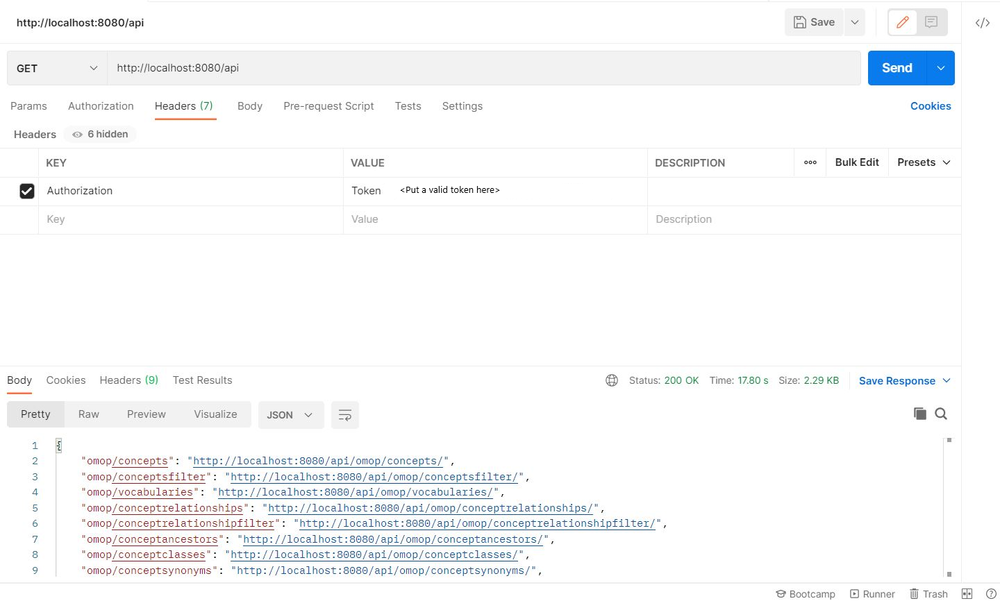

The Carrot-Mapper API¶
The Carrot-Mapper API allows programmatic interaction with the Carrot-Mapper database. This API is developed using the Django REST framework. Access to API endpoints is protected by token based authentication. The REST API is also the means of communication between the Django webapp and its supporting Azure Functions.
This page documents most of the endpoints defined. The only exceptions are some page-view URLs that are not designed for REST access, but rather are for internal use by the webapp.
Our development team typically tests API endpoints using the Postman software.
API Root¶
An API root can be accessed using: http://localhost:8080/api and this endpoint lists all the available endpoints in the API (see Figure 1). Figure 1 also demonstrates that for testing API endpoints, a token is required, which can be requested from the system administrator.
 Figure 1 A sample API endpoint testing through Postman
Prepend the string http://localhost:8080/api/ to each of the defined URLs to access a valid endpoint.
Access to the dev/test/prod systems is similarly via https://ccom-dev.azurewebsites.net/api/, https://ccom-test.azurewebsites.net/api/ and https://ccom.azurewebsites.net/api/ respectively, with different auth tokens for each.
Filter fields¶
Many endpoints support selected filter fields. Here we define the syntax used to express the available filter options for a given endpoint.
filter_fields:
name: exact
?name=ABC can be optionally appended to the URL to filter by the name property.
Supplying no filter field will return all results.
filter_fields:
id: exact, in
?id=ABC can be appended to the URL to filter by the id property, or the filter field
?id__in=1,2,3 can be appended to return only results with id of either 1, 2, or 3. Similarly, supplying no
filter field will return all results.
Multiple filter fields can be defined for a given URL, leading to more complicated examples. Multiple filters are
separated by &, with no restriction on the ordering of the filters, thus
filter_fields:
id: exact, in
name: exact
?id=1
?id__in=1,2,3
?name=ABC
?id=1&name=ABC
?name=ABC&id__in=1,2,3
Specifying returning fields¶
For some endpoints (those defined using DynamicFieldsMixin), users have an option of specifying return fields. On this page, these endpoints are marked with . If no return fields parameter is supplied, all fields will be returned.
Return fields are specified by the syntax ?fields=id,name. When combined with filters, the syntax is thus for example ?dataset_name=test&fields=id.
OMOP DB¶
Read-only endpoints exist for 8 tables of the OMOP CDM DB.
-
Concept table:
- omop/concepts/ Returns all records in the
concepttable. - omop/concepts/1/ Returns concept details from the
concepttable forconcept_id=1. - omop/conceptsfilter/
filter_fields: concept_id: in, exact concept_code: in, exact vocabulary_id: in, exact
- omop/concepts/ Returns all records in the
-
Concept_ancestor table:
- omop/conceptancestors/ Returns all records from the
concept_ancestortable - omop/conceptancestors/262/ Returns all records from the
concept_ancestortable withconcept_ancestor_id=262 - omop/conceptancestors/
filter_fields: ancestor_concept_id: exact descendant_concept_id: exact
- omop/conceptancestors/ Returns all records from the
-
Concept_class table:
- omop/conceptclasses Returns all records from the
concept_classtable - omop/conceptclasses/10th%20level/ Returns all records from
concept_classtable withconcept_class_id='10th level'
- omop/conceptclasses Returns all records from the
-
Concept_relationship table:
- omop/conceptrelationships/ Returns all records from the
conceptrelationshiptablefilter_fields: concept_id_1: exact concept_id_2: exact relationship_id: exact - omop/conceptrelationshipfilter/ Returns all records from the
conceptrelationshiptablefilter_fields: concept_id_1: in, exact concept_id_2: in, exact relationship_id: in, exact
- omop/conceptrelationships/ Returns all records from the
-
Concept_synonym table:
- omop/conceptsynonyms/ Returns all records from the
concept_synonymtable - omop/conceptsynonyms/2/ Returns all records from the
concept_synonymtable withconcept_id=2
- omop/conceptsynonyms/ Returns all records from the
-
Domain table:
- omop/domains Returns all records from the
domaintable - omop/domains/Condition/ Returns all records from the
domaintable withdomain_id=Condition
- omop/domains Returns all records from the
-
Drug_strength table:
- omop/drugstrengths/ Returns all records from the
drug_strengthtablefilter_fields: drug_concept_id: in, exact ingredient_concept_id: in, exact
- omop/drugstrengths/ Returns all records from the
-
Vocabulary table:
- omop/vocabularies/ Returns all records from the
vocabularytable - omop/vocabularies/Cost/ Returns a record from a
vocabularytable withvocabulary_id=Cost
- omop/vocabularies/ Returns all records from the
Carrot¶
Note that many of these endpoints implement user permissions checks, and may restrict or filter results based upon the user rights associated to the Token provided.
-
User table
- users/ Returns all records from the
auth_userstable. - users/<User_id>/ Returns user details from the
auth_userstable byid. - usersfilter/
filter_fields: id: in, exact
- users/ Returns all records from the
-
mapping_scanreport table
- scanreports/ Returns all records from the
mapping_scanreporttable. - For this endpoint, making a GET/POST request shows the results. Making a PUT/PATCH/DELETE request allows
for editing.
filter_fields: parent_dataset: exact - scanreports/<ScanReport_id>/ Returns all records from the
mapping_scanreporttable byid.
- scanreports/ Returns all records from the
-
mapping_scanreporttable table
- scanreporttables/ Returns all records from the
mapping_scanreporttablestable.filter_fields: id: in, exact name: in, exact scan_report: in, exact - For this endpoint, making a GET/POST request shows the results. Making a PUT/PATCH/DELETE request allows for editing.
- scanreporttables/<ScanReportTable_id>/ Returns all records from the
mapping_scanreporttabletable byid.
- scanreporttables/ Returns all records from the
-
mapping_scanreportfield table
- scanreportfields/ Returns all records from the
mapping_scanreportfieldtable.filter_fields: id: in, exact name: in, exact scan_report_table: in, exact - For this endpoint, making a GET/POST request shows the results. Making a PUT/PATCH/DELETE request allows for editing.
- scanreportfields/<ScanReportField_id>/ Returns all records in the
mapping_scanreportfieldstable byid.
- scanreportfields/ Returns all records from the
-
mapping_scanreportvalue table
- scanreportvalues/ Returns all records from the
mapping_scanreportvaluestable.filter_fields: id: in, exact name: in, exact scan_report_field: in, exact - For this endpoint, making a GET/POST request shows the results. Making a PUT/PATCH/DELETE request allows for editing.
-
scanreportvalues/<ScanReportValue_id>/ Returns all records from the
mapping_scanreportvaluestable byid. -
scanreportvaluepks/?scan_report=<ScanReport_id> Returns all records from the
mapping_scanreportvaluestable which are linked to the scan report byidthrough the chain ofScanReportValue -> ScanReportField -> ScanReportTable -> ScanReport, and which additionally do not haveconceptID=-1(which is the default for those without an associated ScanReportConcept). - scanreportvaluesfilterscanreporttable Returns all ScanReportValues associated to the supplied
ScanReportTableid.filter_fields: scan_report_table: exact
- scanreportvalues/ Returns all records from the
-
mapping_scanreportconcept table
- scanreportconcepts/ Returns all records from the
mapping_scanreportconceptstable. For this endpoint, making a put request allows to accept a json array that is beneficial in its own right with a single call to an api endpoint. - scanreportconcepts/<ScanReportConcept_id>/ Returns all records from the
mapping_scanreportconceptstable byid. - scanreportconceptsfilter/ Returns all records from the
mapping_scanreportconceptstable, with additional filtering capabilities onconcept_id.filter_fields: id: in, exact object_id: in, exact content_type: in, exact concept_id: in, exact - scanreportactiveconceptfilter/ Returns all records from the
mapping_scanreportconceptstable which (1) are associated to an object with the givencontent_type(15forScanReportField,17forScanReportValue- any other value will return None); and (2) are associated to aScanReportwhich is both active (not hidden) and has StatusMapping Complete. This endpoint is only available to the Azure Function superuser.filter_fields: content_type: exact
- scanreportconcepts/ Returns all records from the
-
mapping_classificationsystem table
-
mapping_datadictionary table
-
datapartner table
-
mapping_omoptable table
- omoptables/ Returns all records from the
mapping_omoptabletable. - omoptables/<OmopTable_id>/ Returns all records from the
mapping_omoptabletable byid. - UNUSED! omoptablesfilter/
filter_fields: id: in, exact
- omoptables/ Returns all records from the
-
mapping_omopfield table
-
mapping_mappingrule table
- mappingrules/ Returns all records from the
mapping_mappingruletable. - mappingrules/<MappingRule_id> Returns all records from the
mapping_mappingruletable byid. - mappingrulesfilter/
filter_fields: scan_report: in, exact concept: in, exact - mappingruleslist/?id=<ScanReport_id> This returns all mapping rules associated to the
ScanReportwithid. This requires looking up a number of foreign keys and may be rather slow. - This also supports pagination, using the page number parameter
pand page size parameterpage_size, e.g.mappingruleslist/?id=56&p=1&page_size=30
- mappingrules/ Returns all records from the
-
mapping_dataset table
- datasets/ Returns all
Datasetswhich the user is able to view.filter_fields: id: in, exact data_partner: in, exact hidden: in, exact - datasets/<Dataset_id> Return a single
Datasetbyid. - datasets/update/<Dataset_id> Update a single
Datasetbyid. - datasets/delete/<Dataset_id> Delete a single
Datasetbyid. - datasets/create Create a single
Dataset. - datasets_data_partners/ Returns all
Datasetswhich the user is able to view, while providing a pagination option, and pre-fetching (for performance) Data Partner information associated to each.filter_fields: id: in, exact data_partner: in, exact hidden: in, exact - This also supports pagination, using the page number parameter
pand page size parameterpage_size, e.g.datasets_data_partners/?id=56&p=1&page_size=30
- datasets/ Returns all
-
mapping_projects table
Count Stats¶
- countstats/ Returns the total number of
ScanReports,ScanReportTables,ScanReportFields,ScanReportValues&MappingRulesin the database. - countstatsscanreport/?scan_report=<ScanReport_id> Returns the total number of tables, fields, values and mapping rules in a
ScanReportbyid. - countstatsscanreporttable/?scan_report_table=<ScanReportTable_id> Returns the total number of
ScanReportFieldsandScanReportValuesin aScanReportTablebyid. - countstatsscanreporttablefield/?scan_report_field=<ScanReportField_id> Returns the total number of
ScanReportValuesin aScanReportFieldbyid.
Assorted others¶
-
analyse/<ScanReport_id>/ Returns an analysis of the
ScanReportConceptsin theScanReportwithid. This analysis compares to all otherScanReports, finding ancestor and descendants of each, and reporting the results (specifically, any mismatchedConceptsfound between thisScanReportand any other) -
countprojects/<Dataset_id>/ Returns the count of distinct projects to which the provided
Datasetidis associated. -
scanreports/<ScanReport_id>/download Returns the
ScanReportfile in.xlsxformat withidfrom Azure blob storage as an HTTP Response.